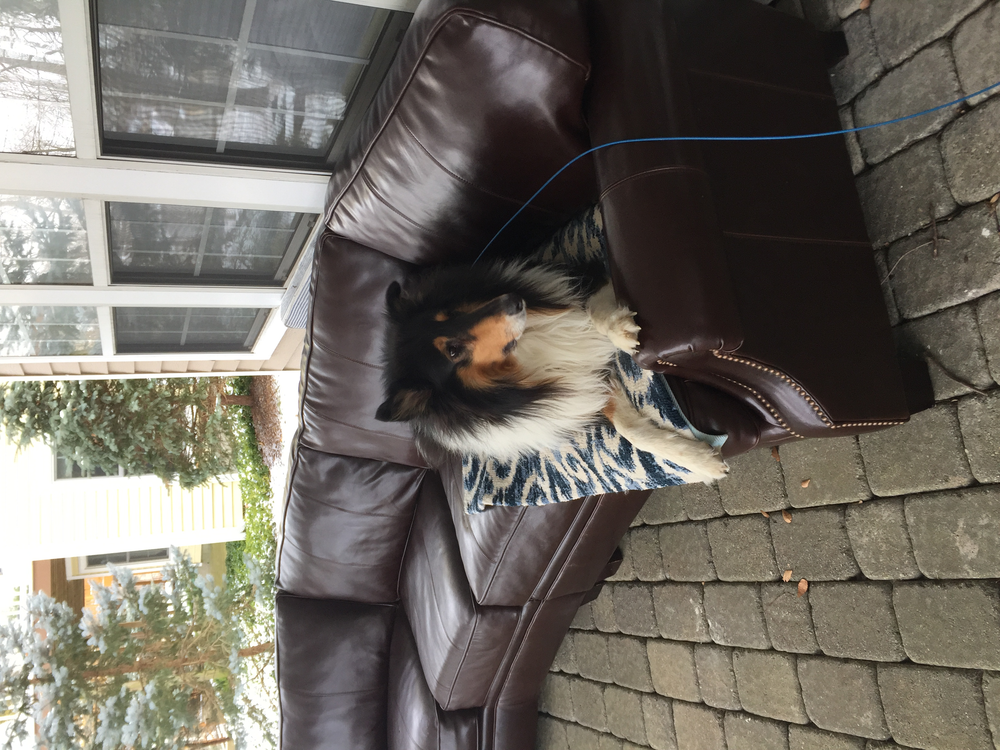

Despre Mine
Sânt pasionat de Machine Learning și aplicatii bioinformatice in practica medicala. Sânt membru al laboratorului de bioinformatica şi biologie computaţională la Tufts (BCB) condus de Professor Lenore Cowen. Sub indrumarea mentorului meu, Prof. Cowen, cercetez reţele biologice între proteine şi analizez predicţii funcţionale ale interacţiilor proteină-proteină și cross-species network embeddings.
Eu continui studile cu un Master în Infomatica la Tufts din 2021. Sânt pasionat de computere, mathematica (în mod special Linear Algebra) şi fizică. Îmi place să fac drumeţie, să joc tenis, să exersez şi să citesc.


